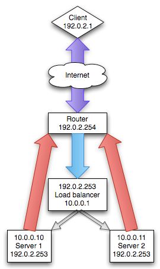
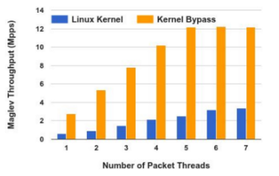
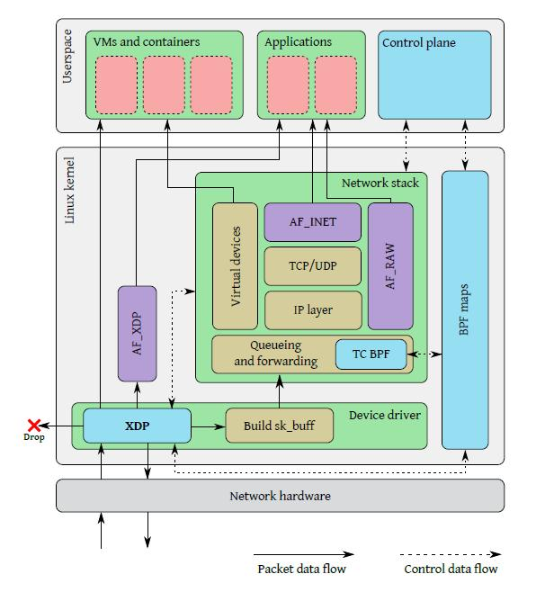
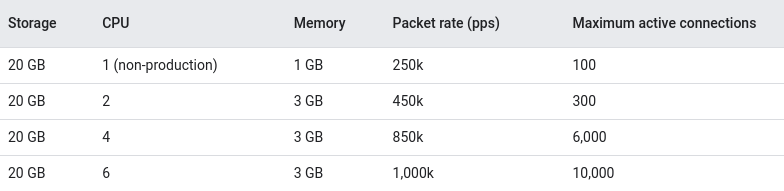
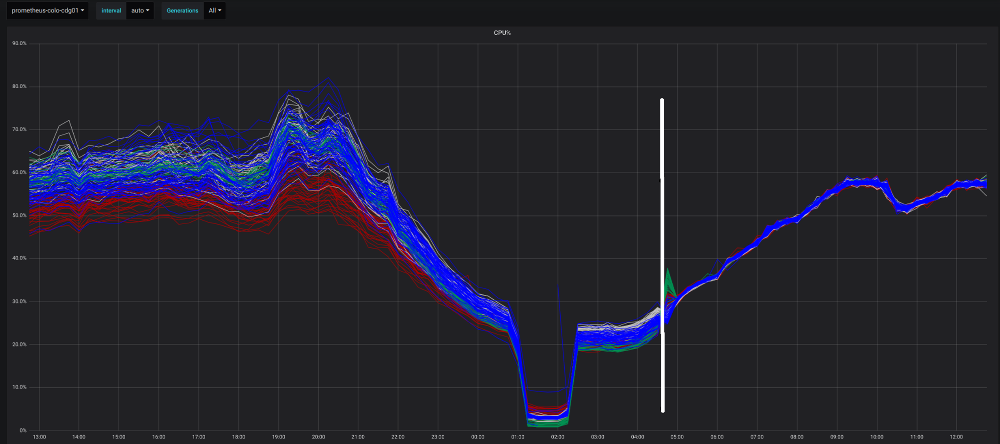

layer 4 load balancing
layer 4 load balancing:
لود بالانسر لایه 4 نوعی لود بالانسر است که تغیری در بسته ها ایجاد نمیکند و صرفا بسته ها را بر اساس سشن TCP به سرور مقصد ارسال میکند. چون این نوع load-balancer مانند Route صرفا بسته ها را به سمت سرور مقصد ارسال میکنند و تغیری در بسته ایجاد نمیکنند در لود های بالا عمل کرد مناسبی دارند. (البته Des MAC بسته ها تغیر میکند)DSR (Direct Server Return):
لود بالانسر های لایه 4 از حالت DSR برای load balancing استفاده میکنند. همانطور که در تصویری زیر مشخص است بسته های ورودی از روتر به load-balancer VIP (virtual IP address) ارسال میشوند - سپس load-balancer با توجه به سشن TCP بسته ها را به سرور ها ارسال میکند. load-balancer میداند که کدام TCP Session را به کدام سرور ارسال کرده و تمام پکت های دیگر این سشن را نیز برای همان سرور ارسال میکند.بسته های خروجی سرور ها هم به صورت مستقیم به router ارسال میشوند و دیگر کاری به load-balancer ندارند.  Data flow پکت در تصویر زیر مشخص است - src پکتی که به سرور میرسد برابر با load-balancer VIP است و اگر load-balancer VIP در سرور تعریف نشده باشد - سرور به در خواست پاسخ نمیدهد پس باید load-balancer VIP را در loopback سرور تعریف کرد. (این موضوع یکی از معایب DSR است)

DSR در anycast:
اگه شبکه anycast ECMP ای داشته باشیم میتوان با استفاده از DSR packet flow رو توی این شبکه کنترول کرد. کلود ها مثل cloudflare ویا AWS از DSR برای کنترول packet flow در شبکه استفاده میکنند. مثلا درخواست کاربری از مشهد به سمت تهران Route شد - در load-balancer تهران اون درخواست رو به مشهد route کرد تا پاسخ کاربر از مشهد ارسال شود.محیط اجرا:
برنامه لینوکسی یا در کرنل اجرا میشود یا kernel را bypass میکند. بخش زیادی از بازدهی load-balancer رو محیط اجرا مشخص میکند: XDP (eXpress Data Path):
یک high performance data path که بر پایه eBPF کار میکنه و این قابلیت رو به وجود میاره که پکت های شبکه در پایین ترین نقطه پردازش شوند: معرفی Layer 4 Load Balancer ها :
seesaw :
به عنوان برنامه در user-space اجرا میشود| تولید کننده | Goolge |
| زبان برنامه | Go |
| کلاسترینگ | قابلیت کلاستر شدن داره |
| لایسنس | Apache 2.0 |
| پشتیبانی از anycast | بله |
| موارد استفاده | on-prem GKE |
performance:
Unimog :
در eBPF - XDP اجرا میشود| تولید کننده | Cloudflare |
| زبان برنامه | ? |
| کلاسترینگ | قابلیت کلاستر شدن داره |
| لایسنس | Private |
| پشتیبانی از anycast | بله |
| موارد استفاده | Cloudflare CDN |
تصویر زیر نشان دهنده لود سرور های لبه Cloudflare در یکی از دیتاسنتر ها بعد از مهاجرت به Unimog است: 
GLB :
| تولید کننده | GitHub |
| زبان برنامه | C |
| کلاسترینگ | قابلیت کلاستر شدن داره |
| لایسنس | BSD 3-Clause |
| پشتیبانی از anycast | بله |
| موارد استفاده | تمام سرویس های github |
dpvs :
| تولید کننده | iQIYI |
| زبان برنامه | C |
| کلاسترینگ | قابلیت کلاستر شدن داره |
| لایسنس | GPLv2 |
| پشتیبانی از anycast | ? |
| موارد استفاده | ? |
relayd :
| تولید کننده | OpenBSD |
| زبان برنامه | C |
| کلاسترینگ | قابلیت کلاستر شدن داره - CARP |
| لایسنس | ? |
| پشتیبانی از anycast | ? |
| موارد استفاده | ? |
katran :
در eBPF - XDP هم اجرا میشود| تولید کننده | |
| زبان برنامه | ++C |
| کلاسترینگ | قابلیت کلاستر شدن داره |
| لایسنس | GNU General Public |
| پشتیبانی از anycast | بله |
| موارد استفاده | facebook و بازار |